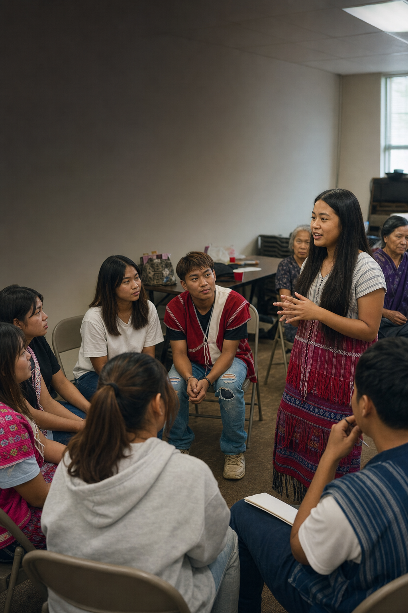

01 · Connect
Let’s build what comes next.
Reach KOA, follow public updates, or begin a conversation about working together.
Choose the right path
Email for collaboration, Messenger for a direct note, or Facebook for official public updates.
 KOAKaren Organization of America
KOAKaren Organization of America01 · Connect
Reach KOA, follow public updates, or begin a conversation about working together.
Email for collaboration, Messenger for a direct note, or Facebook for official public updates.

02 · Work together
Potential partners can describe the community, goal, location, timeline, and kind of support involved.
Who you are, what you hope to do, who it serves, and how KOA might take part.
03 · Stay informed
KOA’s Facebook page shares public updates, gatherings, advocacy moments, and community news.
Use the Facebook link below to see the latest posts directly from KOA.

04 · Take the next step
Send a thoughtful message. KOA can respond through the channel best suited to the request.
The contact choices below open your email, Messenger, or the official Facebook page.
Contact KOA
These are direct, practical contact paths. There is no form that sends your information to an unknown service.
Collaboration and questions
Best for a detailed request, partnership idea, invitation, or follow-up.
Write an email ↗Direct message
Start a shorter conversation through the official KOA Facebook account.
Open Messenger ↗Public updates
See the latest public posts, photographs, programs, and gathering notices.
Visit Facebook ↗Before you write
Name your organization or community and where you are located.
→Explain what you want to accomplish and who it would serve.
→Include a useful timeline and the easiest way to follow up.
→Contacts listed in KOA material
These names, roles, and public emails appeared in the supplied organization material and should be reconfirmed before major outreach.
President
General KOA and leadership inquiries.
Email presidentJoint Secretary
Organization and coordination inquiries.
Email secretaryAdvocacy Coordinator
Civic education and advocacy inquiries.
Email advocacy